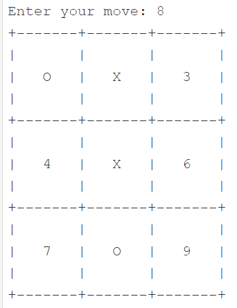
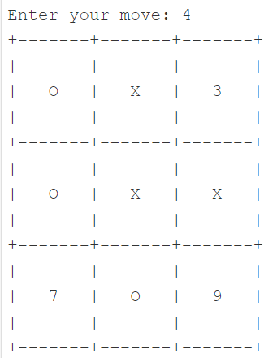

вдосконалення навичок у використанні Python для розв’язання складних завдань;
інтеграція методів програмування в одну програму, що складається з багатьох різних елементів.
Примітка. Завдання з матеріалів python institute.. Завдання є фінальним проєктом, завершує ч. 1 рівня “Essential”, після чого можна пройти сертифікаційний тест.
Постановка завдання
Ваше завдання - написати просту програму, яка вдає, ніби грає з користувачем у хрестики-нуліки. Щоб вам було простіше, ми вирішили спростити гру. Ось наші припущення:
комп’ютер (тобто Ваша програма) повинен грати у гру, використовуючи ‘X’;
користувач (наприклад, Ви) повинен грати в гру, використовуючи символи ‘O’;
перший хід належить комп’ютеру - він завжди поміщає свій перший ‘X’ у середину дошки;
всі квадрати пронумеровані рядок за рядком, починаючи з 1 (див. приклад сеансу нижче для довідки)
користувач робить свій хід, вводячи номер обраного ним квадрата - число має бути дійсним, тобто. воно має бути цілим числом, воно має бути більше 0 і менше 10 і воно не може вказувати на поле, яке вже зайняте;
програма перевіряє, чи закінчена гра - є чотири можливі варіанти: гра повинна продовжуватися, гра закінчується нічиєю, Ви виграєте або комп’ютер виграє;
комп’ютер відповідає
ходом і перевірка повторюється; * не застосовуйте штучний інтелект у будь-якій формі – випадковий вибір поля, зроблений комп’ютером, досить добрий для гри.
Приклад сеансу роботи з програмою може виглядати так:


Вимоги
Реалізуйте такі функції:
дошка повинна зберігатися як список з трьох елементів, у той час як кожен елемент є ще одним список з трьох елементів (внутрішні списки представляють рядки), так що всі квадрати можуть бути доступні з використанням наступного синтаксису:
board[row][column]
кожен із елементів внутрішнього списку може містити 'O', 'X' або цифру, що становить номер квадрата (такий квадрат вважається вільним)
зовнішній вигляд дошки повинен бути таким самим, як у прикладі.
Отримати випадкове ціле число можна за допомогою функції Python під назвою randrange(). У наведеному нижче прикладі програми показано, як використовувати її (програма виводить десять випадкових чисел від 0 до 8).
Примітка: інструкція from-import забезпечує доступ до функції randrange, визначеної у зовнішньому модулі Python, що викликається random.
from random import randrange
for i in range(10):
print(randrange(8))
Code
from random import randrangedef display_board(board):for row in board:print("+-------"*3+"+")for _ inrange(3):print("| ", end="")print("|")for square in row:print("| "+ square +" ", end="")print("|")for _ inrange(3):print("| ", end="")print("|")print("+-------"*3+"+")def enter_move(board):whileTrue: move =int(input("Enter your move: ")) -1 row = move //3 col = move %3if0<= row <=2and0<= col <=2and (board[row][col] ==" "or board[row][col].isdigit()): board[row][col] ="O"breakelse:print("Wrong move. Try again.")def make_list_of_free_fields(board): free_fields = []for i, row inenumerate(board):for j, square inenumerate(row):if square ==" "or square.isdigit(): free_fields.append((i, j))return free_fieldsdef victory_for(board, sign):# Check rows, columns and diagonalsfor i inrange(3):ifall([cell == sign for cell in board[i]]): # Check rowreturnTrueifall([board[j][i] == sign for j inrange(3)]): # Check columnreturnTrueif board[0][0] == board[1][1] == board[2][2] == sign: # Check main diagonalreturnTrueif board[0][2] == board[1][1] == board[2][0] == sign: # Check other diagonalreturnTruereturnFalsedef draw_move(board): free_fields = make_list_of_free_fields(board)if free_fields: move = free_fields[randrange(len(free_fields))] board[move[0]][move[1]] ="X"# Testing the functionsboard = [[str(i *3+ j +1) for j inrange(3)] for i inrange(3)]board[1][1] ="X"whileTrue: display_board(board)if victory_for(board, "X"):print("Computer won!")breakelif victory_for(board, "O"):print("You won!")breakiflen(make_list_of_free_fields(board)) ==0:print("Draw!")break enter_move(board) display_board(board)if victory_for(board, "O"): display_board(board)print("You won!")break draw_move(board)